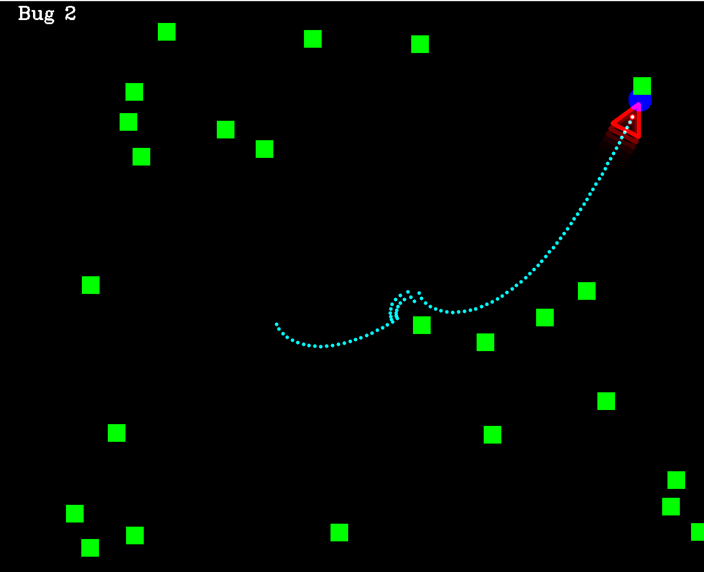
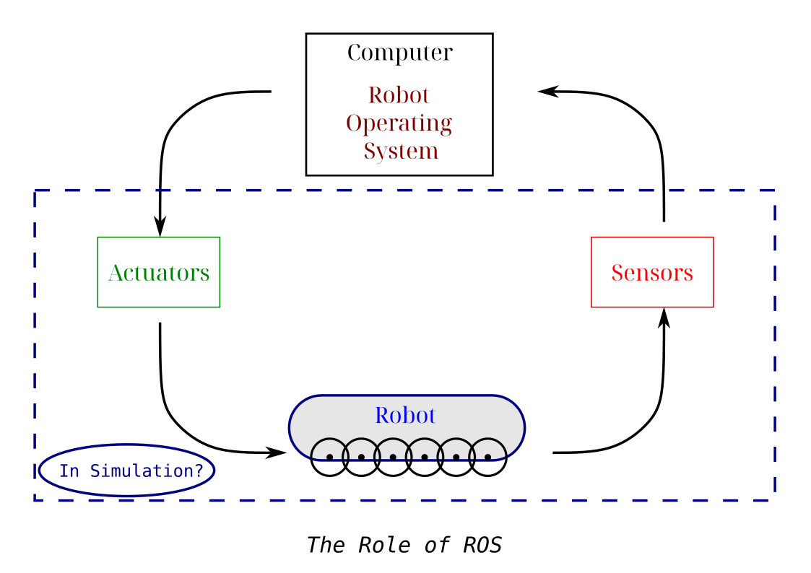
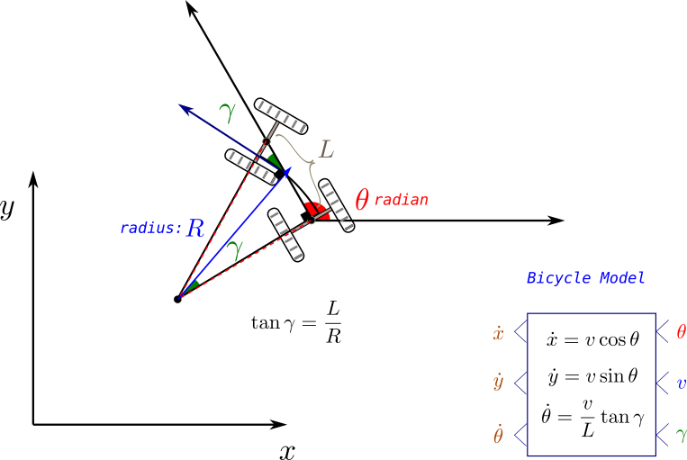
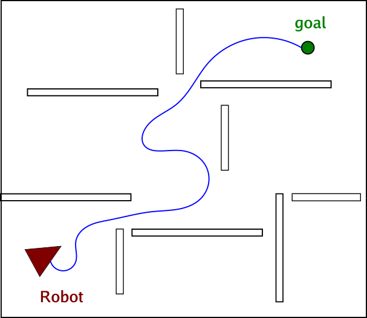
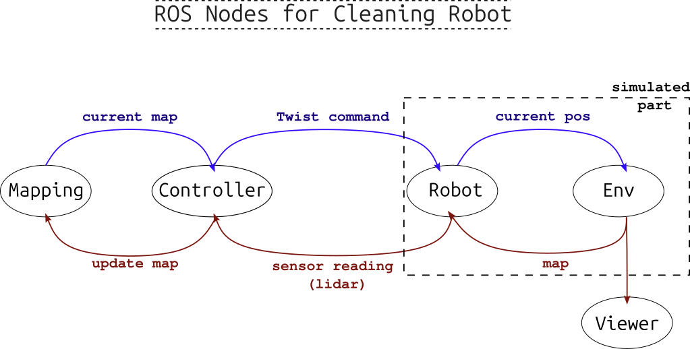
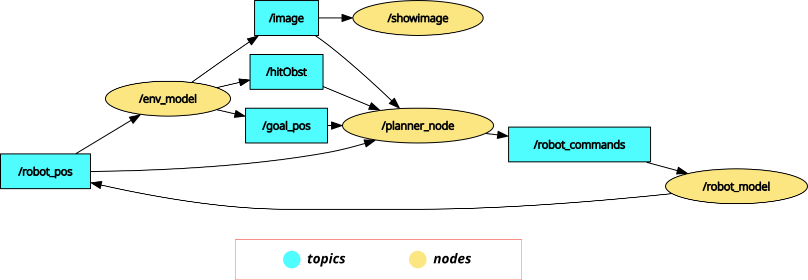

Up and Running with Autonomous Mobile Robotics (AMR) in ROS 2 and C++

*Reinforcement Learning (RL) represents a powerful framework for solving sequential decision-making problems in dynamic environments across diverse domains, such as control of robots or optimization of profit. However, its practical implementation requires navigating a variety of software packages, encompassing deep learning libraries (e.g., TensorFlow, PyTorch, JAX/Flax), environment frameworks (e.g., Gymnasium, Numpy), and hyperparameter optimization techniques and libraries. This post critically evaluates the common PyTorch, Gymnasium, and NumPy RL stack by comparing it to a faster alternative: JAX/Flax for both of the model training and simulation of environments. A Gridworld example evaluating both training speed and accuracy is utilized to test these packages. Additionally, we complement this example by a comprehensive tracking and monitoring of the training process using MLflow along with a thorough hyperparameters optimization via Optuna. The post concludes with a discussion of the results and final recommendations for optimal use cases of each of these packages.*
Image of mobile fleet in warehouse
Figure 1: The popular eco-system for modular and scalable training of RL agents.
The Gif
Table of Content
Introduction:
What is AMR and ROS2
Application Areas of Mobile Robotics
Logitic Farming Rescue House chores
Why C++ and ROS 2
Note about difference from ROS1
The navigation task in focus
One of the most important tasks in mobile robotics is navigation, as it is the main purpose for an autonomous mobile robot, namely to navigate safely and efficiently while fulfilling its task.
In navigation the inputs are the sensor stream of data, be it lidar scans, camera frames or even odometry wheels data. The output, however; is mainly the navigation movement commands, which should be planned for the whole task at global level, and also taking care of necessary local changes like obstacle avoidance. These plans require knowledge of the robot (localization) and its surroundings (mapping), and then based on that path planning for future movement.
These are basically the main tasks for any mobile robot. However, the exact setup, like sensors resolution, actuators flexibility, computational power, and the actual task at hand will determine how hard solving these steps will be.
The simulation idea
As a first demo here, our goal will be modest, defining a goal in 2D simulated environment and then navigating towards that goal. Here we are simulating all of the sensors, actuators and the working environment as well, all as 2D only, as shown in the figure below. This last assumption actually isn't that bad, as ground mobile robot on flat level will rarely require the third altitude dimension.

Figure 1: The popular eco-system for modular and scalable training of RL agents.
In addition to setting random destination point in the environment, we are also scattering random obstacles (shown as green boxes below) to make the task more challenging.
Figure 1: The popular eco-system for modular and scalable training of RL agents.
It is also worth noting that the graphics are drawn with OpenCV library.
The bicycle model
After defining the simulation environment, it is important to set the exact robot state under control. This actually depends mainly at what kind of actuators we have, for instance we can send the next point coordinates (x,y) as the next command but it should be converted to actual wheels speed and rotation utilizing another movement model. This may introduce another type of errors, so we prefer here to use the speed $v$ and wheels rotation angle $\gamma$.
However, to simulate the exact movement of the robot given its forward speed and front wheels rotation, the literature proposes an approximate model called "the bicycle model" for car-like robots, where as shown in the figure below, we can calculated the update of the robot position and heading.
However, this model is also simplistic as it ignores, for example, the wheels slipping and friction.

Figure 1: The popular eco-system for modular and scalable training of RL agents.
Primer on Path Planning (more to come)
As mentioned previously, the tasks to solve here are localization, mapping and planning. As a starter tutorial, the focus here will be merely on planning (while leaving the others to future posts), in other words:
We will assume here full knowledge of the robot pose, as well as its surrounding. What it is left is defining the speed and rotation it should take in every step to reach its destination
This task is known as path planning, and it is a deep field of its own that has witnessed so much progress so far.
However, here we will review (very briefly) the main ideas behind the most prominent approaches, starting from the classical ones, implementing only Bug2 algorithm, which is really basic one.

Figure 1: The popular eco-system for modular and scalable training of RL agents.
As the figure above shows the task is to find the trajectory (series of x,y coordinates) to reach the goal while avoiding obstacles. Another "nice to have" feature is to follow the shortest or more generally the cheapest path.
TODO: make an image of all methods (or table)
This has lead to algorithms that depends on basic logic like following the line of sight from position to goal while taking turns around obstacles: Bug 1,2. Later, graph search algorithms shown to be good candidates given a grid-based representation of the environment, known also as, occupancy grid: Breadth-first search, A, D However, all these methods ignore the constrains that the robots work within, for instance a robot that can only move forward. Therefore another set of methods that can guarantee feasible moving paths were proposed: Dubins Path, Lattice planners Lastly, for robot where a dynamic environment always poses different destinations, graph-based planning was too not suitable due to changing cost maps, and the need to recalculate every time. Therefore, probabilistic methods, like Rapid Random Trees were proposed and they showed better and more adaptable planning results.
The Practical Part
In the following we will implement the main navigation program (in 2D simulator) from scratch in C++ with ROS2 framework, utilizing Bug 2 planning algorithm and bicycle model for the robot for demonstration.
First we will provide a very short but comprehensive introduction to ROS2, its installation and main key concepts. Then we will go over how to structure and create the project within it, and design its data interfaces.
Lastly, a template for a ROS node written in C++ we be mentioned (the full open source code will be available here: TODO), as will as the results after running it with some of the failure cases.
Sometimes it is hard to note
Installing ROS
Here we're adapting ROS2 Jazzy release, which still maintained in the time of writing withing Ubuntu 24 operating system.
sudo apt install ros-<distro>-desktop sudo apt install ros-dev-tools
test it.
source /opt/ros/jazzy/setup.bash ros2 run turtlesim turtlesim_node
You can put the source command in .bashrc
Core concepts of ROS
ROS is a middelware for:
- Better communication between robotic functionalites
- Better collaboration (unified popular framework)
- Huge library of popular algorthems
Main elements in ROS:
- Nodes
- Topics
- Services
- Actions
Creating the package in ROS
The hierarchy of any ROS2 project contain the following levels:
- Workspace level (the full robot platform of hardware)
- Package level (the full intended application you're doing)
- Node level (the exact functionalities undertaken to achieve the application)
- Package level (the full intended application you're doing)
Creating the project directories
The following commands show how to initialize the project directories:
$ mkdir amr_ws $ cd src/ $ cd .. $ colcon build // always at ws level $ source install/setup.bash $ source opt/ros/jazzy/setup.bash
Creating the package:
$ cd src/ $ ros2 pkg create planners_pkg --build-type ament_cmake --dependencies rclcpp
Creating a node:
$ cd amr_ws/src/planners_pkg/src $ touch planners.cpp
After that you can edit your node code in planners.cpp. For the change to take effect you need to build the whole package again (with colcon) and source the project once more.
To run the node afterwards use (possibly under alternative name):
$ros2 run planners_pkg planners --ros-args -r __node:=alternative_name
To inspect the node under running, like viewing the topics, commands like the following are useful:
$ros2 node list $ros2 node info /topic_name
Other command that helps debugging and viewing topics info are:
ros2 topic echo /topic_name
ros2 interface show example/interface
ros2 topic pub -r 2.0 /topic_name interface "{key: value}"
The first command shows the content of a topic messages The second show the structure of topic messages (called interfaces) The last command shows how to publish new topic from command line just for debugging purposes
Used interfaces
We will need mainly to send:
-
Control commands: for that we will use here Twist messages
-
Robot pose: for that we will use vec3 messages
-
Images of the environment: for that we will use image messages
Maybe make an image or Table for them
yasin@yasin-B650M-D3HP:~/Dokumente/SideProjects/housekeeper_ws/src$ ros2 interface show geometry_msgs/msg/Pose2D # Deprecated as of Foxy and will potentially be removed in any following release. # Please use the full 3D pose. # In general our recommendation is to use a full 3D representation of everything and for 2D specific applications make the appropriate projections into the plane for their calculations but optimally will preserve the 3D information during processing. # If we have parallel copies of 2D datatypes every UI and other pipeline will end up needing to have dual interfaces to plot everything. And you will end up with not being able to use 3D tools for 2D use cases even if they're completely valid, as you'd have to reimplement it with different inputs and outputs. It's not particularly hard to plot the 2D pose or compute the yaw error for the Pose message and there are already tools and libraries that can do this for you.# This expresses a position and orientation on a 2D manifold. float64 x float64 y float64 theta
yasin@yasin-B650M-D3HP:~/Dokumente/SideProjects/housekeeper_ws/src$ ros2 interface show geometry_msgs/msg/Vector3 # This represents a vector in free space. # This is semantically different than a point. # A vector is always anchored at the origin. # When a transform is applied to a vector, only the rotational component is applied. float64 x float64 y float64 z
yasin@yasin-B650M-D3HP:~/Dokumente/SideProjects/housekeeper_ws/src$ ros2 interface show sensor_msgs/msg/Image # This message contains an uncompressed image # (0, 0) is at top-left corner of image std_msgs/Header header # Header timestamp should be acquisition time of image builtin_interfaces/Time stamp int32 sec uint32 nanosec string frame_id # Header frame_id should be optical frame of camera # origin of frame should be optical center of cameara # +x should point to the right in the image # +y should point down in the image # +z should point into to plane of the image # If the frame_id here and the frame_id of the CameraInfo # message associated with the image conflict # the behavior is undefined uint32 height # image height, that is, number of rows uint32 width # image width, that is, number of columns # The legal values for encoding are in file include/sensor_msgs/image_encodings.hpp # If you want to standardize a new string format, join # ros-users@lists.ros.org and send an email proposing a new encoding. string encoding # Encoding of pixels -- channel meaning, ordering, size # taken from the list of strings in include/sensor_msgs/image_encodings.hpp uint8 is_bigendian # is this data bigendian? uint32 step # Full row length in bytes uint8[] data # actual matrix data, size is (step * rows) yasin@yasin-B650M-D3HP:~/Dokumente/SideProjects/housekeeper_ws/src$
yasin@yasin-B650M-D3HP:~/Dokumente/blog/Site_2$ ros2 interface show geometry_msgs/msg/Twist # This expresses velocity in free space broken into its linear and angular parts. Vector3 linear float64 x float64 y float64 z Vector3 angular float64 x float64 y float64 z
There are many other built-in interfaces. To view them run:
$ ros2 interface list
This command will show also interfaces for the services and actions as well.
Main code skeleton of a Node and its publishers/subscribers in C++
After defining what the input and output message structure for each node will be (in its simplest case as Figure X above), we need to start implementing the logic in code, namely by doing the following steps for ROS2/C++ program:
-
Create the node file inside the package
srcdirectory, as a file with.cppextension. If your code is big or need to be used elsewhere as well, use additional.hppfiles and include them in the.cppfile. -
Give the node file and the node instance class representative names for what they do actually, like Planner/Robot Model, etc.
-
Write the exact code to implement your logic. A basic template for all nodes, can be as follows:
#include "rclcpp/rclcpp.hpp" #include "geometry_msgs/msg/pose2_d.hpp" #include "geometry_msgs/msg/vector3.hpp" #include <random> #include <vector> #include <sstream> #include "utils_funs.hpp" // maybe receive twist message to change position class Robot: public rclcpp::Node { public: Robot(int H, int W, int RobotSize):Node("robot_model") { std::printf("Robot is created"); sub_ = this->create_subscription<geometry_msgs::msg::Vector3>("robot_commands",10, std::bind(&Robot::update_model,this,std::placeholders::_1)); pub_ = this->create_publisher<geometry_msgs::msg::Pose2D>("robot_pos",10); pos = getInitialPos(W,H,RobotSize); old_pos.assign(pos.begin(), pos.end()); pose_.set__x(pos[0]); pose_.set__y(pos[1]); pose_.set__theta(pos[2]); //location_.header.stamp = this->now(); RCLCPP_INFO(this->get_logger(),"built"); timer_ = this->create_wall_timer(std::chrono::milliseconds(40), std::bind(&Robot::send_location,this)); } void update_model(const geometry_msgs::msg::Vector3::SharedPtr message){ // update based on bicycle model double gamma_rel = message->x*M_PI/180; double speed = message->y; double dtheta = (speed*(tan(gamma_rel))/RobotSize); double dc = speed * std::cos(pos[2]+dtheta); double dr = -speed * std::sin(pos[2]+dtheta); // y-axis is reversed //dr = 0, dc=0; old_pos.assign(pos.begin(), pos.end()); std::cout << dr << " " << dc << " " << dtheta << std::endl; pos[1] = pos[1]+dr; pos[0] = pos[0]+dc; pos[2] = pos[2]+dtheta; std::cout << pos[0] << " " << pos[1] << " " << pos[2] << std::endl; this->send_location(); } void send_location(){ this->pose_.set__x(this->pos[0]); this->pose_.set__y(this->pos[1]); this->pose_.set__theta(this->pos[2]); //this->location_.header.frame_id = "0"; //this->location_.header.stamp = this->now(); pub_->publish(this->pose_); //RCLCPP_INFO(this->get_logger(),"Callback is called"); } void reset_pose(){ pos.assign(old_pos.begin(), old_pos.end()); } private: geometry_msgs::msg::Pose2D pose_; rclcpp::Subscription<geometry_msgs::msg::Vector3>::SharedPtr sub_; rclcpp::Publisher<geometry_msgs::msg::Pose2D>::SharedPtr pub_; rclcpp::TimerBase::SharedPtr timer_; // TODO double or int? std::vector<double> pos; std::vector<double> old_pos; int RobotSize = 50; }; int main(int argc, char **argv) { rclcpp::init(argc,argv); auto node = std::make_shared<Robot>(1200,1200,50); rclcpp::spin(node); rclcpp::shutdown(); return 0; }
- Update your
CMakeLists.txtas follows:
cmake_minimum_required(VERSION 3.8) project(planners_pkg) if(CMAKE_COMPILER_IS_GNUCXX OR CMAKE_CXX_COMPILER_ID MATCHES "Clang") add_compile_options(-Wall -Wextra -Wpedantic) endif() # find dependencies find_package(ament_cmake REQUIRED) find_package(rclcpp REQUIRED) find_package(geometry_msgs REQUIRED) find_package(nav_msgs REQUIRED) find_package(sensor_msgs REQUIRED) find_package(cv_bridge REQUIRED) find_package(image_transport REQUIRED) find_package(OpenCV REQUIRED ) include_directories( ${OpenCV_INCLUDE_DIRS} ) include_directories( include/${PROJECT_NAME}/ ) # first node: robot add_executable(robot_model src/robot_model.cpp ) ament_target_dependencies(robot_model rclcpp geometry_msgs ) add_executable(env_model src/env_model.cpp) ament_target_dependencies(env_model rclcpp geometry_msgs nav_msgs cv_bridge sensor_msgs std_msgs image_transport OpenCV) add_executable(planner_node src/planners.cpp) ament_target_dependencies(planner_node rclcpp geometry_msgs sensor_msgs std_msgs image_transport) install(TARGETS robot_model env_model planner_node DESTINATION lib/${PROJECT_NAME}/)
- Build the package by running:
make .TODO
Sketching the nodes network
The following figure depicts the general idea from the program, with its important parts (usually needed for real robots) being the controlling logic and the mapping part, along with other hardware drivers for sensors and actuators. As we are here modeling the simulation as well, we need nodes to represent both environment and robot models.

Figure 1: The popular eco-system for modular and scalable training of RL agents.
In our example, after running all the nodes, we can view the graph showing the nodes and their published or subscribed-to topics with the command: $rqt_graph, which will give figure below.
Note that in addition to the three main nodes (robot mode, environment model, and planner), we are using image_view node from another built-in ROS package called image-tools. Additionally, we don't use a mapping node here, as we assume a simple case of complete knowledge of a static environment. In future iterations of this project we will add mapping capabilities.

Figure 1: The popular eco-system for modular and scalable training of RL agents.
Note also that what we are using in the planner_node are only the goal and robot poses, in addition to a boolean flag indicating whether an obstacle has been hit. The image of the scene topic is subscribed to, but not used by the planner function.
From the graph we note that a synchronization between the nodes is necessary to ensure validity of data (values calculated to a specific point in time comes from that point too): therefore the robot model node set the frequency of computing and the rest of the nodes depend on receiving a certain topic message they are subscribed to, which trigger their calculation cycles.
In the next subsection we will focus on the planner node in our example.
Bug 2 Algorithm Steps
For the purpose of this basic example, we will be starting with basic Bug algorithm. In Bug 1 algorithm (proposed by in [TODO]), the steps are simple, namely following the steps sequence below:
- Define the vector starting from the robot position towards the goal position and move along it
- When the robot encounter an obstacle, it inspects its boundaries in both direction, then determines the nearest point to the destination and move towards it.
- It then resumes following the direction vector until it arrives at a specific distance from the destination.
The idea seems simple but it main contribution is the exact definition of the algorithm logic and steps. Later this algorithm was improved in Bug 2 (proposed by x in [TODO]) where the inspection of an obstacle boundaries was carried out from a single direction only /left or right/. This leads to faster maneuvering around obstacles and more efficient routes.
The Gif shown at the start of this post, shows a possible implementation of the idea of Bug 2 and what its path might look like.
In the code part below, we show the function implementing the path planning part. Mainly it consists of 3 steps:
- Finding the movement vector: diffx, diffy, targetT
- Finding the rotation difference between the robot and that vector (which needs to be restricted between $\pi$ and $-\pi$): dirDiff
- Lastly sending the rotation and movement commands, where:
- The rotating is related to the rotation difference + the existence of obstacles: act.x.
- The movement speed is fixed forwards unless it faces an obstacle then the robot goes backs: act.y.
Note: some robots cannot drive back, so in our case, it is assumed that it can
void plan_bug2(const sensor_msgs::msg::Image::SharedPtr message){ // update based on bicycle model // Step 1: find direction vector double diffx = goal_pos[0] - robot_pos[0]; //NOTE: robot can be older than simulation double diffy = goal_pos[1] - robot_pos[1]; // Step 2: find difference of direction rotation and transfer it to range [-pi,pi] float targetT = atan2(-diffy,diffx)*180/M_PI;//sin axis is reversed double dirDiff = (int)(targetT-(robot_pos[2]*180/M_PI))%360; // range between -2pi, 2pi dirDiff = dirDiff -((180<dirDiff)*360) +((-180>dirDiff)*360); // now range is -pi,pi // Step 3: set rotation speed (with obstacles turn by +25 degree), // with fixed linear speed (with obstacle) this->act.x = (dirDiff*0.5)+(hitObst*25); this->act.y = 10-(hitObst*30);// always fixed (to test) this->send_command(); }
Running the full program
After writing the code for all the nodes shown in Fig X (TODO), we should start all the nodes together so they can exchange data through topics and services and operate the different functionalities of the program.
We can do that in two ways:
- First, by running each node in its own terminal. We do that by sourcing the project in each terminal then running the command:
ros2 run pkg_name node_name --ros-args -r __node:=alternative_name
-
replacing the
pkg_nameandnode_namewith the package and the node names respectively. -
Second by running one launch command that starts all nodes together in one terminal. This command requires launch file, either as python file or as
.xmlfile.
For our source code, we utilize launch file (written in its own package for better organization) in .xml format, as follows:
<launch> <node pkg="planners_pkg" exec="robot_model"/> <node pkg="planners_pkg" exec="env_model"/> <node pkg="image_tools" exec="showimage"/> <node pkg="planners_pkg" exec="planner_node"/> </launch>
Note that showimage node require different package (image_tools).
To run this file, the command will be (after sourcing the project):
ros2 launch planners_launch planners.launch.xml
It is as simple as that.
Failure Cases
While the majority of the experiments end successfully, with the robot reaching the destination, some cases shows inability or difficultly for the robot to reach the destination, namely:
- The need to take a sharp turn to the destination point, which the robot cannot perform. This leads to following circular path around the destination, and never reaching it.
TODO (mabye an image for each case)
- Avoiding obstacles following the wrong direction. As Bug 2 takes always one direction to maneuver around an obstacle, regardless which one is faster, it will require longer path.
TODO (mabye an image for each case)
- Lastly, our exact controlling method to avoid obstacle is not optimal. Namely, the robot backs up and turns sharper, but only for one step, when facing an obstacle. Another manuever, like turning inplace (if possible) or backing for multiple steps in parallel line to the obstacle boundary will be better.
Conclusion and Next Steps
Write your post here.